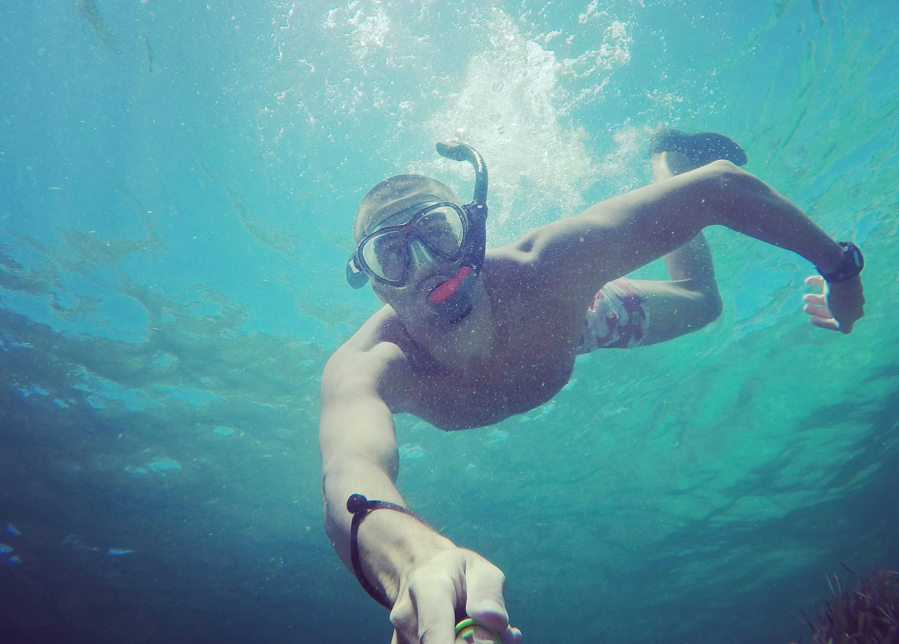

Joaquín M. Austin
Product designer
My journey with design began twenty years ago. In my early years, I worked in branding, marketing and web design, across all kinds of projects. The evolution of technology and my constant curiosity allowed me to evolve toward product design, focusing more and more on the needs of users and the business, working across both B2C and B2B projects.
I've worked as a freelancer, for startups, agencies, and companies both large and small. This diversity of contexts, together with the luck of having collaborated with incredibly talented people, has given me what I consider a holistic view of design.
About AI:
What an exciting time to be a designer! AI isn't just a simple upgrade to what we already have, it's a completely different, revolutionary leap. In my day-to-day work, I use it to analyze data, extract metrics, gather insights, look for inspiration, put together quick prototypes, implement pixel-perfect designs, and strengthen the connection between design and development.
Simple, useful and well made are my core design values I work with and support every day.